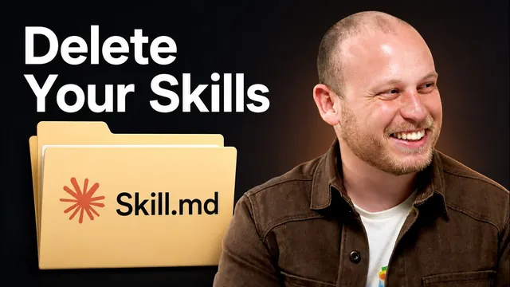

클로드 스킬을 전부 지웠더니 더 똑똑해졌다

원본 영상 보기 →
- 지시가 과할수록 모델을 방해해요
- 검증 기준을 먼저 정해줘야 AI가 스스로 일을 끝내요
- 지시문은 브랜드·형식 같은 고정값에만 쓰고, 판단이 필요한 부분은 비워두세요
한 줄 요약
클로드 코드를 만든 앤스로픽 개발자 보리스 처니가 시스템 프롬프트를 80% 넘게 지운 이유, 그리고 "AI에게 세세한 지시 대신 목표와 검증 기준을 줘라"는 조언을 다룬 영상이에요. 유튜버 네이트 허크가 자기 채널로 직접 실험해보며 리액션합니다.
전체 내용 정리
앤스로픽이 클로드 코드 시스템 프롬프트를 80% 넘게 지운 이유
보리스 처니는 클로드 코드가 제품이자 하니스(harness)로서 끊임없이 바뀐다고 설명해요.
새 모델이 나올 때마다 시스템 프롬프트의 상당 부분을 삭제하거나 바꾸고, 도구 구성과 도구용 프롬프트도 계속 손본다고 합니다.
이유는 모델마다 성격이 완전히 다르기 때문이에요. 몇 달 전 특정 모델을 위해 넣어둔 지시문이 다음 모델에는 전혀 맞지 않을 수 있다는 뜻이죠.
특히 Opus 5는 지능이 크게 올라간 모델이라, 예전 모델이 스스로 처리하지 못해 시스템 프롬프트로 교정해줘야 했던 행동들을 이제는 모델이 알아서 처리한다고 그는 말합니다.
6개월마다 CLAUDE.md와 스킬, 훅을 지우고 다시 시험해보세요
보리스는 AI 제품을 직접 만드는 사람이 아니어도, 6개월에 한 번은 CLAUDE.md와 스킬, 훅을 전부 지우고 모델이 어떻게 반응하는지 보라고 권해요. Opus 5로 넘어오면서는 앤스로픽도 이 방법을 적극 권장한다고 밝혔습니다.
네이트는 이 조언이 "모두가 같은 모델을 쓰면 같은 결과가 나오는 것 아니냐"는 통념과 반대되는 이야기라 흥미롭다고 반응해요.
그는 이를 좋은 비유로 설명합니다. 10살 아이, 대학생, 10년차 실무자에게 슬라이드 제작을 시킬 때의 차이라고요.
10살 아이에게는 슬라이드 몇 장을 만들지, 제목과 색깔, 텍스트 형식까지 구체적으로 알려줘야 하잖아요. 하지만 수백 개의 슬라이드를 만들어본 10년차 실무자에게 똑같이 세세한 지시를 주면, 오히려 그 사람의 전문성과 판단력을 발휘하지 못하게 막는 꼴이 됩니다.
이렇게 모델의 능력을 지시문으로 억누르는 것을 업계에서는 "언하블링(unhobbling)"이라고 불러요.
네이트가 직접 실험해본 결과 — 스킬을 지웠더니 오히려 더 나은 결과물이 나왔어요
영상을 본 네이트는 자기 레포를 복제해서 CLAUDE.md와 모든 스킬을 지우고 클로드 코드를 다시 써봤습니다.
그가 준 과제는 이 인터뷰 영상 URL을 주고, 평소처럼 시청자용 리소스 가이드를 만들어달라는 것이었어요.
스킬이 있는 원래 버전은 9페이지짜리 가이드로, 색상과 박스 서식, 자신의 헤더 이미지, 유튜브 채널 링크, AIS Plus 링크까지 깔끔하게 갖춘 결과물이 나왔습니다.
반면 스킬도 CLAUDE.md도 없는 새 세션 버전은 서식이 거칠고 헤더도 없었어요. 하지만 대신 인터뷰 내용을 여러 개의 핵심 아이디어로 나누고, 각 아이디어에 타임스탬프까지 붙여 정리했습니다.
네이트는 오히려 이 스킬 없는 버전의 콘텐츠 구성이 더 마음에 들었다고 말해요.
그의 결론은 스킬을 통째로 지우라는 게 아닙니다. 스킬 안에서 콘텐츠의 본질(어떻게 나눌지, 무엇을 강조할지)까지 세세하게 정해둔 부분은 덜어내고, 헤더 이미지나 링크, 색상 같은 브랜드 요소처럼 정말 고정해야 하는 것만 남기는 방향으로 다시 만들어야 한다는 거죠.
보리스의 조언을 무비판적으로 따라 하면 안 되는 이유
네이트는 편집 중 한 가지를 덧붙여요. 보리스 처니든 다른 유튜버든 자신의 조언이든, 그대로 자기 작업에 적용해서는 안 된다는 겁니다.
보리스 같은 사람이나 안드레이 카패시 같은 인물이 올리는 조언은 대부분 하니스를 직접 설계하고, 거대한 코드베이스에서 매일 작업하며 모델을 직접 훈련하는 사람의 관점에서 나온다고 그는 짚어요.
네이트 자신은 리서치와 지식노동, 문서·산출물 제작 위주로 일하지 소프트웨어를 만드는 게 주된 업무는 아닙니다. 그래서 그는 자신과 비슷한 방식으로 AI를 쓰는 사람의 조언을 참고하라고 권해요.
소프트웨어를 만들고 오케스트레이션하는 사람들에게는 스킬을 완전히 지우는 게 맞을 수 있습니다. 하지만 자신처럼 지식노동을 하는 사람에게는, 헤더 이미지를 어디에 넣고 어떤 색상 팔레트를 쓸지 같은 브랜드 가이드라인용 스킬이 여전히 필요하다고 강조하죠.
"프로덕트 오버행"과 지나치게 세세한 지시가 오히려 발목을 잡는 이유
보리스는 "언하블링"을 리서치 쪽에서 쓰는 "프로덕트 오버행(product overhang)"이라는 개념으로 설명해요. 오늘 나와 있는 모델만으로도 사람들이 아직 알아차리지 못한 수많은 능력이 이미 존재한다는 뜻입니다.
그는 모델에게 실제로 해낼 수 있다고 생각하는 것보다 조금 더 어려운 과제를 줘보라고 권해요.
그가 흔히 목격하는 실수는 사람들이 클로드 코드나 클로드를 쓸 때 지나치게 구체적인 지시를 준다는 겁니다. "이렇게, 이렇게, 이렇게 하라, 1번 다음 2번 다음 3번 다음 4번" 식으로 순서를 못 박는 방식은 최신 모델에는 오히려 맞지 않다고 해요.
대신 과제를 조금 더 높은 수준에서 설명하고, 지켜야 할 가드레일과 완료 기준(exit criteria)만 정해준 뒤 모델이 알아서 작업하게 놔두고 나중에 다시 확인하라는 겁니다. 그는 이 방식이 6개월 전에는 통하지 않았지만 지금은 통한다고 강조해요.
검증이 프롬프트 엔지니어링보다 중요해진 시대
보리스는 지금 시대의 핵심 역량이 프롬프트 엔지니어링보다는 다른 데 있다고 말합니다. 클로드에게 살짝 버거운 과제를 주는 방법, 그리고 그 과정에서 클로드가 스스로 작업을 검증할 수 있게 만드는 방법을 찾는 데 있다고요.
그는 검증이야말로 사람들이 가장 놓치기 쉬운, 가장 중요한 요소라고 강조해요.
네이트는 이를 자신의 실전 팁으로 연결합니다. 그는 목표를 줄 때 "무엇이 좋은 결과인지"뿐 아니라, 그 기준에 도달했는지 증명할 구체적인 검증 방법까지 함께 지시하고, 기준을 통과할 때까지 반복하게 한다고 설명해요.
재미있는 팁도 하나 덧붙입니다. 종종 목표 마지막에 "프로토타입이나 개념 증명이 아니라 열 번 테스트하고 반복해서 완전히 QA를 마친, 내일 당장 시장에 내놓을 수 있는 결과물을 원한다"는 식으로 감정을 담아 요청하면 결과가 더 좋아지는 경우가 있다고요.
그는 이 전체 흐름을 사람을 관리하는 것에 비유해요. 좋은 관리자는 일일이 시키지 않고 방향만 점검하며, 판단력과 안목을 발휘해 사람이 스스로 생각하도록 놔둔다는 겁니다.
그리고 이를 한 문장으로 정리합니다. "생각은 아웃소싱하되 이해는 절대 아웃소싱하지 말라." 결국 이 모든 에이전트와 세션을 지휘하는 사람은 여전히 사용자 자신이라고 강조하죠.
핵심 인사이트
- 지시가 과할수록 모델을 방해해요: 세세한 단계별 지시는 옛날 모델에 맞춰진 습관입니다. 최신 모델에는 목표·가드레일·완료 기준만 주는 게 오히려 더 나은 결과를 낸다는 걸, 보리스와 네이트 둘 다 실험으로 확인했어요.
- 검증 기준을 먼저 정해줘야 AI가 스스로 일을 끝내요: "무엇이 좋은 결과인가"를 미리 정의하고 검증 방법을 같이 주면, AI가 기준을 통과할 때까지 스스로 반복 개선합니다. 보리스는 이 검증 설계 능력이 프롬프트 엔지니어링보다 중요해졌다고 말하죠.
- 지시문은 브랜드·형식 같은 고정값에만 쓰고, 판단이 필요한 부분은 비워두세요: 네이트의 실험처럼 색상·헤더·링크 같은 고정 요소는 스킬로 남기되, 콘텐츠 구성 방식까지 세세히 정해두면 오히려 결과물의 질이 떨어질 수 있어요.
오늘 당장 해볼 것
- 자주 시키는 반복 업무(문서 초안, 요약, 답변 작성 등) 하나를 골라보세요. 평소 쓰던 세세한 지시문을 다 빼고 목표만 던져본 다음, 결과물이 실제로 더 나은지 비교해보시면 됩니다.
- 반복 작업 프롬프트 하나에 "완료 기준"을 문장으로 추가해보세요. 예를 들면 "오탈자 없이 바로 발송할 수 있는 수준까지 스스로 점검하고 다시 써라" 같은 식으로요.
- 외주 업체나 담당 직원에게 업무를 맡길 때 "어떻게 할지"까지 세세히 정해주는 대신, "뭘 확인하면 끝난 건지"만 먼저 정해주고 나머지는 판단에 맡겨보세요. 이번 주 업무 하나에 시험해보시면 좋아요.